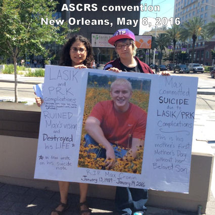

Доктор Эдвард Бошник:"На протяжении многих лет я имел несчастье наблюдать за сотнями пациентов, которые потеряли качественное зрение и страдали тяжелой депрессией в результате операции LASIK. Двое из этих пациентов были настолько подавлены потерей зрения после операции, что предприняли попытку самоубийства. На самом деле, есть несколько задокументированных случаев самоубийств после lasik."
Источник: Несколько слов о LASIK
Доктор Артур Б. Эпштейн:...многие из нас, специалистов по контактным линзам, потратили неисчислимые часы, пытаясь помочь пациентам, жизнь которых была буквально разрушена LASIK. Источник: Обзор оптометрии, ноябрь 2006 г.
Суперсайт OSN 19.05.2009 : Доктор Лоулесс сказал, что его клиника внесла поправки в свой основной пункт, включив в него формулировку о риск возможного психологического ущерба от идеальной или неидеальной процедуры рефракционной хирургии в ответ на прошлогоднее заседание комиссии Управления по контролю за продуктами и лекарствами США по безопасности LASIK, на котором рассматривались вопросы качества жизни, а также сообщалось психологический ущерб, причиненный плохими результатами LASIK у пациентов.
Мы представляем эту информацию, потому что люди, особенно будущие пациенты с процедурой LASIK, должны знать, что осложнения процедуры могут оказать глубокое негативное влияние на качество жизни. Если после процедуры LASIK у вас депрессия или мысли о самоубийстве, пожалуйста, обратитесь за профессиональной помощью. Если вы находитесь в критическом положении и нуждаетесь в немедленной помощи, кликните сюда , позвоните по телефону 1-800-273-8255 или 911.
Хотите поделиться своими чувствами с теми, кто побывал там и понимает вас? Присоединяйтесь к обсуждению на FaceBook .
Если у вас был плохой исход операции LASIK с сопутствующей депрессией или мыслями о самоубийстве, пожалуйста, отправьте отчет о медицинском наблюдении с Управлением по санитарному надзору за качеством пищевых продуктов и медикаментов в режиме онлайн. Кроме того, вы можете позвонить в Управление по санитарному надзору за качеством пищевых продуктов и медикаментов по телефону 1-800-FDA-1088, чтобы сообщить об этом по телефону. бумажный бланк и либо отправьте его по факсу на номер 1-800-FDA-0178, либо отправьте по почте на адрес, указанный внизу страницы 3, либо загрузите Мобильное приложение MedWatcher для сообщения о проблемах с LASIK в FDA с помощью смартфона или планшета.
РАССМАТРИВАЕТЕ ЛИ ВЫ ВОЗМОЖНОСТЬ ПРОВЕДЕНИЯ LASIK ИЛИ ДРУГОЙ ОПЕРАЦИИ ПО КОРРЕКЦИИ ЗРЕНИЯ? Пожалуйста, подумайте об этом. Было зарегистрировано более 30 самоубийств, связанных с применением Lasik, и бесчисленное количество отдельных сообщений о депрессии, тревоге и посттравматическом стрессе, связанных с применением Lasik. В 2008 году Управление по санитарному надзору за качеством пищевых продуктов и медикаментов (FDA) назначило специальные публичные слушания по поводу Lasik после того, как пострадавшие пациенты обратились в агентство с жалобами. За несколько недель до слушания в СМИ появились сообщения о самоубийствах, связанных с применением Lasik, и плохих результатах. На слушании ведущие хирурги Lasik, объединив усилия, чтобы защитить общественное мнение о Lasik, выстроились в очередь, чтобы засвидетельствовать, что Lasik не может привести к депрессии или самоубийству. Индустрия Lasik даже наняла психиатра Дженнифер Морс, доктора медицинских наук, чтобы она засвидетельствовала, что пациенты, страдающие депрессией после Lasik, уже были в депрессии до Lasik, и что нет научных доказательств какой-либо прямой связи между Lasik и депрессией или самоубийством. В октябрьском номере журнала EyeWorld за 2008 год даже цитировались слова Морса о том, что у несчастных пациентов с Lasik хорошие результаты, но дефектный мозг (David Laber. Пациенты с депрессией могут с трудом справляться с последствиями операции Lasik . EyeWorld. Октябрь 2008 г.). Врачи любой другой медицинской специальности должны признавать наличие хирургических осложнений и устранять их, иначе им грозят судебные иски, дисциплинарные взыскания со стороны государственных медицинских комиссий и потеря медицинской лицензии. В области Lasik хирурги с готовностью лгут, чтобы защитить себя, своих коллег и подливку Lasik. Ниже приведена ссылка на опубликованный в феврале 2016 года обзор медицинской литературы о хирургических осложнениях (всех видах хирургических вмешательств) и их влиянии на психосоциальное благополучие пациентов. В заключении говорится: "; Хирургические осложнения, по-видимому, являются важным и часто долгосрочным фактором, определяющим психосоциальные последствия после операции. Полученные результаты подчеркивают важность удовлетворения психологических потребностей пациентов после хирургических осложнений ."Имейте в виду, если у вас возникнут проблемы после лазерной офтальмохирургии, ваш хирург почти наверняка преуменьшит или проигнорирует ваши опасения. Если вы продолжите жаловаться, то, скорее всего, столкнетесь с враждебностью и, в конечном счете, с отказом от вас. Поскольку процедура Lasik абсолютно не нужна и сопряжена со значительным риском для жизненно важного органа чувств, производители Lasik сделают все необходимое, чтобы скрыть проблемы. Пожалуйста, прочтите следующую статью и подумайте о психологическом воздействии хирургических осложнений на пациентов. Lasik ничем не отличается Готовы ли вы принять на себя этот скрытый риск, связанный с Lasik?
Пациенты, которые сожалеют о лазерной офтальмохирургии - The Guardian от 18.04.2023
Из статьи: Четыре года спустя, после изнурительных осложнений, вызванных процедурой, из-за которой [Глория Макконнелл] большую часть времени не могла вставать с постели, Макконнелл покончила с собой в возрасте 60 лет. Ее сын [Кингсли] сказал, что в записке, которую она оставила своей семье, Макконнелл написала, что боль от неудачной операции Lasik повлияла на ее решение покончить с жизнью. Кингсли описывает свою мать как веселую и молодую до того, как она перенесла операцию. Осложнения появились в жизни Макконнелл через несколько недель после операции, но она старалась сохранять позитивный настрой. По словам Кингсли, по мере того, как ситуация продолжала ухудшаться, она стала замкнутой. Ее главной проблемой была хроническая сухость глаз, из-за которой, по ее словам, у нее было ощущение, что веки горят. Она также страдала от невралгии роговицы, которая вызвана повреждением нервов роговицы. Прочитать статью
Предупреждение о глазной хирургии от вдовы мужчины, который покончил с собой - Новости CTV от 16.01.2019
Из статьи: Предсмертная записка, написанная Тимом Фентемом, содержала извинения и объяснение.
"Мои глаза разбиты", - написал муж и отец двоих детей перед своей смертью в результате самоубийства в 2016 году.
Жена Тима Фентема Лори рассказала CTV News, что она была опустошена, но не шокирована его смертью в результате самоубийства в июле 2016 года, после того, как в течение многих лет наблюдала, как он страдал от осложнений, связанных с операцией на глазу, называемой лучевой кератотомией или RK.
Лори Фентем теперь делится трагической историей своего покойного мужа, узнав о других случаях самоубийств после рефракционной операции на глазу. Читать далее
Смерть метеоролога из Детройта Джессики Старр в результате самоубийства заставляет обратить внимание на безопасность Lasik - USA Today, 18.12.2018
Из статьи: За месяц до того, как покончить с собой 12 декабря, Джессика Старр, метеоролог с телестанции в Детройте, рассказала, что она все еще борется с такими осложнениями, как сухость глаз и затуманенное зрение, возникшими после операции на глазу по типу Lasik, проведенной в октябре.
"Я по-прежнему нуждаюсь во всех молитвах и добрых пожеланиях, потому что это трудный путь", - сказала 35-летняя Старр, метеоролог из детройтского канала Fox 2 (WJBK-TV) и мать двоих маленьких детей, в видео на своей публичной странице в Facebook. Читать далее
Посмотрите видео, которое Джессика Старр опубликовала в Facebook незадолго до своей смерти.
Семья Джессики Старр рассказала ее историю в телевизионной программе CTV W5 news magazine - 6.04.2019
Болезненные побочные эффекты лазерной офтальмохирургии привели к самоубийству мужчины - Новости CTV от 28.11.2018
Из статьи: Более двух десятилетий страдая от изнурительной боли в глазах, житель провинции Онтарио покончил с собой, что, по словам его семьи, было актом отчаяния, чтобы положить конец страданиям, вызванным осложнениями лазерной хирургии глаза.
Семья Пола Фитцпатрика рассказала CTV News о расследовании, проведенном W5 в прошлом месяце в связи с редким, но болезненным побочным эффектом лазерной офтальмохирургии, из-за которого некоторые пациенты испытывают сильную хроническую боль.
Это осложнение, известное как невралгия роговицы, может привести к повреждению нервов глаза и быть настолько мучительным, что некоторые пациенты не могли работать, а в некоторых случаях даже подумывали о самоубийстве. Читать далее
Отчет о клиническом случае за 2018 год: Молодой человек пытается покончить с собой после эффекта домино из-за осложнений LASIK
Комментарий веб-мастера к статье: 19-летнему мужчине была проведена операция LASIK на обоих глазах. Три дня спустя он пожаловался на ухудшение зрения и перенес операцию по поднятию щитков и промыванию места соединения лоскута с роговицей. Пять дней спустя он прошел курс лечения по поводу высокого внутриглазного давления (ВГД). Через месяц после операции LASIK он обратился в другую офтальмологическую клинику по поводу потери зрения (официальной слепоты) и боли в глазах. Ему был поставлен диагноз и назначено лечение по поводу чрезвычайно высокого ВГД и скопления жидкости под пластинами LASIK. Через тридцать дней зрение мужчины частично улучшилось, ВГД снизилось, а жидкость в межзубной перегородке рассосалась. Однако через 3 месяца у него развилось врастание эпителия (клеток, растущих под лоскутом), катаракта на обоих глазах и глаукома. Несколько месяцев спустя у него снова повысилось ВГД и ухудшилось зрение. Ему хирургическим путем имплантировали глаукомный клапан на оба глаза. Мужчина был направлен к психиатру, поскольку у него была тяжелая депрессия, и он пытался покончить с собой.
Источник: Кабрал-Масиас и др. Стромальная кератопатия, вызванная давлением, после лазерного кератомилеза in situ: острые и поздние проявления. J Рефракционная хирургия катаракты. Октябрь 2018;44(10):1284-1290.
Клинический случай за 2015 год: Самоубийство после эксимерлазерной рефракционной операции
Рецензия веб-мастера на статью: Молодой человек перенес лазерную операцию по удалению близорукости на обоих глазах. Через несколько недель после, казалось бы, успешной операции у мужчины началась тяжелая депрессия, и он обратился в отделение неотложной помощи глазной клиники. Он был расстроен визуальным результатом операции и жаловался на сухость и раздражение. Ему прописали смазывающие капли и мази.
Несколько недель спустя мужчина снова обратился в офтальмологическую клинику ночью в состоянии тяжелой депрессии и сообщил, что зрение мешает ему нормально функционировать. Ему посоветовали надеть очки.
Несколько недель спустя мужчина снова обратился в глазную клинику, снова посреди ночи, снова в тяжелой депрессии. Ему предложили психологическую консультацию, от которой он отказался. Он покинул клинику, пообещав вернуться на следующее утро, но так и не вернулся. Он покончил с собой.
Отчет FDA о пациентах с суицидальными наклонностями, прошедших курс LASIK в 2016 - 4/6/2017
Мне сделали операцию на глазу LASIK, и после операции у меня были суицидальные наклонности и депрессия До операции LASIK у меня не было никаких проблем со зрением. Я пользовалась одними и теми же очками в течение 10 лет. Я обратилась к одному из лучших офтальмологов в моей области, и он использовал самые современные технологии, за что я заплатила очень высокую цену. Меня никогда не предупреждали о каких-либо изнурительных побочных эффектах, с которыми я столкнулась после LASIK. Я молода, и с тех пор, как я прошла курс lasik, у меня не было ничего, кроме проблем со зрением. Они сказали мне, что у меня будут гало и сухость под глазами не более чем на несколько недель, и у меня будет зрение "высокой четкости". Я не могу поверить, насколько нерегулируема эта процедура и как [FDA] не смогло проинформировать и защитить общественность. Они сказали мне, что я идеальный кандидат. Читать далее
Сотрудник правоохранительных органов покончил с собой после операции LASIK, подав отчет в FDA 5.08.2017
Перенес операцию Lasik в 2001 году, в возрасте [отредактировано FDA], и, по словам доктора [отредактировано FDA], "был идеальным кандидатом". У него была тяжелая эктазия роговицы, после чего он ослеп. В 2003 году ему была проведена трансплантация роговицы. Хрусталик был имплантирован в 2004 году. С тех пор было проведено множество операций. Лазик полностью разрушил мою жизнь. Я потерял многолетнюю работу в качестве помощника шерифа и был увезен с улицы из-за проблем со зрением. Я несколько раз приставлял свой служебный револьвер к виску, обдумывая самоубийство. У меня ежедневные изнурительные головные боли и сильная сухость в глазах. От отчаяния я даже приготовила из своей крови глазные сыворотки для глаз. Ничего не помогает, включая многочисленные попытки подобрать специальные контактные линзы. Я больше, чем когда-либо, склонна к самоубийству и знаю, что это произойдет, когда я наберусь смелости. Врачи Lasik знали, что эта операция чрезвычайно опасна, но их это не волновало, потому что это была индустрия стоимостью в миллиарды долларов. Они солгали FDA, преуменьшив побочные эффекты (председатель правления FDA, который одобрил Lasik, позже подтвердил это) и осложнения этой операции. В LasikPlus мне сообщили, что худшим побочным эффектом этой операции было легкое свечение и сухость в глазах, которые пройдут в течение года. Это была откровенная ложь, и они это знали.
Отчет, поданный в FDA мужем пациентки с суицидальным подходом к процедуре LASIK - 7.02.2017
Через шесть лет после операции LASIK у моей жены была диагностирована эктазия роговицы после того, как у нее появились сильные головные боли, сильная сухость глаз, а также сильные боли в глазах и проблемы со зрением (искажения, ореол, повышенная светочувствительность, тени, привидения, потеря ночного зрения и многое другое); она потеряла работу ИТ-специалиста, потому что у нее был не в состоянии выполнять свои обязанности из-за этих проблем, у него развились тяжелая депрессия и тревога, и он был склонен к самоубийству она еще не оправилась эмоционально от катастрофического исхода этой процедуры.
Описание случая: Мужчина был госпитализирован через 2 месяца после операции Lasik с психозом и мыслями о самоубийстве
Конрой, Массачусетс, Дюран, Пенсильвания, Эйвери, Д.Ди. Случай впервые возникшего психоза после лазерного кератомилеза на месте (LASIK) Операция на глазу. Сопутствующее расстройство ЦНС при первичном уходе. 2016, 22 сентября;18(5).
Выдержка: Изменения зрения после операции лазерного кератомилеза in situ (LASIK), приводящие к неудовлетворенности пациента, такие как снижение контрастной чувствительности, плохое зрение вдаль, блики и ореолы, хорошо описаны в литературе. Несмотря на то, что существует множество общественных форумов и свидетельств отдельных лиц, описывающих развитие депрессивных симптомов в ответ на изменения зрения после LASIK, опубликованных отчетов, описывающих последствия для психического здоровья после этой процедуры, очень мало. Более того, насколько нам известно, ни в одной литературе не описано развитие психоза после операции LASIK. Мы сообщаем о случае с мужчиной, у которого после операции впервые появились психотические симптомы.
Клинический случай: Невралгия роговицы после операции LASIK, приводящая к мыслям о самоубийстве
Феофаноус и др. Невралгия роговицы после операции LASIK. Оптимизм по отношению к Науке . 3 июля 2015 года.
Отрывок: 42-летний мужчина с [высоким уровнем холестерина] в анамнезе перенес операцию LASIK [на обоих глазах]. 10 месяцев спустя он представил Бостонскому фонду по защите зрения (BFS) подробный отчет о своем клиническом ходе: "Сразу после процедуры у него возникло ощущение жжения в обоих глазах. В течение нескольких недель он отмечал симптомы светочувствительности, эффект ореола и сильную сухость глаз. Первоначально ему назначали циклоспорин для местного применения (Рестазис, Аллерган, Ирвин, Калифорния) дважды в день, смазывающие капли без консервантов в течение дня и точечную окклюзию. Эти меры существенно уменьшили его симптомы в левом глазу через 2-3 месяца после операции LASIK; симптомы в правом глазу сохранялись, проявляясь в виде постоянной ноющей боли со слезотечением, которая усиливалась в течение дня, чувствительности к солнечному свету, нечеткости зрения и сухости. Впоследствии его симптомы в правом глазу были устранены с помощью теплых компрессов два раза в день, защитных очков с влагозащищенной камерой в течение дня, мази три раза в день и на ночь, цетиризина внутрь, пробных мягких линз-бандажей и дневной повязки на глаза, что принесло небольшое облегчение. Доксициклин в дозе 100 мг внутрь ежедневно также назначался при легком блефарите. Во время этого периода лечения у пациента развилась депрессия, и в конечном итоге он был госпитализирован из-за суицидальных мыслей, которые, по его словам, были вызваны болью в глазах .
Пациентка с суицидальными наклонностями, перенесшая операцию Lasik в 2011 году. Отчет подан в FDA 22.05.2016
Я делала операцию Lasik 5 лет назад, и она жжет как "ненормативная лексика". Чувствую, что должен покончить с собой У меня начался конъюнктивит, и состояние ухудшилось. Я сыта по горло натуральными слезами и стероидами. Пожалуйста, помогите.
Мать сообщила в FDA о самоубийстве сына в 2016 году - 14.11.2016
Мой сын, [отредактировано FDA], покончил с собой [отредактировано FDA] в 2016 году, нанеся себе огнестрельное ранение в [отредактировано FDA]. Он написал предсмертные записки, в которых утверждал, что покончил с собой, потому что [отредактировано FDA] повредил глаза в результате процедуры PRK (разновидности лазерной коррекции зрения) и, таким образом, разрушил свою жизнь. Мой сын, [отредактировано FDA], был [отредактировано FDA]. Он получал высшее образование в [отредактировано FDA]. Он работал инженером-нефтяником. В раннем подростковом возрасте у него были проблемы с депрессией, но состояние было стабильным до тех пор, пока его не отправили воевать в [отредактировано FDA]. [отредактировано FDA] перенес несложную операцию LASIK в рамках [отредактировано FDA] приблизительно 5 лет назад, в 2010 году, с возможным ухудшением зрения в [отредактировано FDA] 2015 году. В 2015 году ему была проведена процедура PRK [отредактировано FDA] доктором [отредактировано FDA]. Перед процедурой у него был минимальный анамнез и медицинское обследование. Не было никакой информации о диагнозе моего сына - ПТСР, тревожность, неспособность к обучению или депрессия. Не было указано, какие лекарства он принимал. После процедуры у него появились постоянные боли в глазах, сухость в глазах и, в конечном итоге, ухудшение зрения до 100/20. Он потерял зрение в [отредактировано FDA] 2015 году, что привело к тому, что он не мог адекватно визуализировать, чтобы продолжать занятия, и не смог найти работу из-за потери зрения. Он неоднократно посещал доктора [отредактировано FDA], который продолжал "консервативное лечение", несмотря на психологическое ухудшение состояния моего сына. Послеоперационный уход включал в себя то, что врач, настроенный враждебно по отношению к моему сыну, не направил его к другому врачу, обвинив пациента в осложнении, и, в конечном счете, пациент почувствовал безнадежность и решил покончить с собой. Это осложнение, связанное с лазерной обработкой глаза, привело к экономическому кризису моего сына и немедленно привело к ухудшению психологического состояния. Он написал предсмертные письма, в которых утверждал, что покончил с собой из-за того, что доктор [отредактировано FDA] испортил ему глаза. Я сертифицированный акушер-гинеколог, что включает в себя сертификацию хирурга. Я в ужасе от ложной рекламы LASIK как "безопасной процедуры", в то время как на самом деле жизни людей были разрушены из-за того, что врачи ставили денежную выгоду выше медицинского обслуживания пациентов. После ужасной смерти моего сына, потерявшего зрение в результате этой ФРК, процедуры LASIK для его глаз, я была еще больше напугана осложнениями и самоубийствами, связанными с потерей зрения в результате выбранных процедур LASIK, разрушением жизней, вызванным осложнениями, распространенными осложнениями, о которых не сообщалось пациентам, и недостаточная медицинская осведомленность пациентов врачами перед этими процедурами. Ссылка на отчет
~~~~~~~~~~
Примечание редактора: В апреле 2016 года мы узнали личность этого самоубийцы от его матери, которая обратилась к нам. В надежде предотвратить еще одну трагедию, она решила поделиться историей своего сына. Прочитай В память о Максе Кронине .
Пациент, совершивший суицид после операции Lasik в 2011 году, обратился в FDA с заявлением от 29.09.2015
Позвонивший сообщил, что перенес операцию Lasik в [удалено FDA] в [удалено FDA] 2011 году. Хирург упомянул о возможных побочных эффектах, которые, как предполагалось, были временными. "После операции моя жизнь превратилась в сплошной кошмар". Звонивший впал в глубокую депрессию с мыслями о самоубийстве и в настоящее время принимает лекарства от депрессии, а также посещает психотерапевта Звонящий по-прежнему испытывает проблемы с ночным зрением, которые включают затуманенное зрение, блики, ореолы, диплопию в левом глазу и искаженное зрение в правом глазу (видит четыре разных изображения при взгляде на одно изображение) и сухость глаз. Звонивший сообщил, что операция на глазу lasik очень опасна, и его никогда не предупреждали о психологическом воздействии, которое операция окажет на него. Ссылка на отчет
Пациентка с суицидальными наклонностями прошла курс Lasik в 2014 году. Отчет подан в FDA 8.09.2015
Отрывок: Мне пришлось уволиться с работы, потому что у меня постоянно болят глаза, и я больше не могу смотреть на экран компьютера, одновременно занимаясь обслуживанием клиентов и другими своими должностными обязанностями [исправлено FDA]. Моя социальная жизнь полностью разрушилась, а мои личные перспективы были утрачены. Если бы у меня не было поддержки моей семьи, ничто не помешало бы мне впасть в еще более глубокую депрессию, чем сейчас. Суицидальные мысли - это то, с чем я теперь слишком хорошо знаком Моя жизнь полностью ухудшилась, потому что мои глаза были серьезно повреждены ненужной и очень коррумпированной процедурой и промышленностью. И моя жизнь была хорошей. Я был счастлив. Я не просил об этом и даже не подозревал, что это может произойти на самом деле. Операция Lasik была худшим решением в моей жизни, и я сожалею об этом каждый день и, несомненно, буду сожалеть до самой смерти. Полный отчет читайте здесь
Пациенты, перенесшие глазную операцию Lasik, подают в суд на операторов клиник. The Japan Times - 18.12.2014
Из статьи: В среду двенадцать человек, перенесших лазерную операцию на глазах, подали в суд на двух операторов токийской клиники, заявив, что операция Lasik вызвала у них проблемы со здоровьем, такие как сухость глаз и зрительное напряжение...
60-летняя Хитоми Терада рассказала на пресс-конференции в среду, что она страдает от постоянной жгучей боли и вынуждена прикладывать охлаждающую салфетку каждые несколько минут, чтобы справиться с ней. "Я не могу открыть глаза, как раньше, и Я подумывал о том, чтобы покончить с собой ", - сказала она.
Отчет о суицидальных действиях пациентов с LASIK в FDA - 8/10/2014
Мне сделали операцию LASIK 6 месяцев назад. Результат навсегда изменил мою жизнь. Теперь у меня ужасное ночное зрение, которое теперь включает в себя огромные вспышки звезд и яркий свет. Мои глаза действительно не сухие, так что, думаю, я избежала этой пули. Хуже всего то, что для устранения моих проблем с ночным зрением теперь потребуются жесткие линзы, разработанные специально для моих глаз, которые, возможно, даже не решат мои проблемы. Раньше у меня было идеальное зрение с контактными линзами. Какую ужасную ошибку я совершила. Я всего лишь [отредактирован FDA], и теперь всю оставшуюся жизнь я должен бороться с этим ужасным заболеванием. Почему LASIK вообще легален, почему врачи напрямую не сказали мне, что мой большой зрачок может ухудшить ночное зрение? Я бы отдал все до последнего цента, чтобы вернуть свои старые дрянные глаза, которые были идеально зафиксированы контактными линзами. Я несколько раз подумывал о самоубийстве . Я никогда в жизни не склонялся к суициду. Сейчас я принимаю антидепрессанты, и я знаю, что это единственная причина, по которой я здесь сегодня объясняю свою борьбу. Я больше не могу наслаждаться ночными прогулками с друзьями, я не могу никуда пойти ночью без ужасной головной боли от попыток увидеть. Я молюсь и продолжаю молиться, чтобы они нашли способ вылечить это заболевание. Пожалуйста, закройте LASIK. Ссылка на отчет
Спустя двадцать лет после операции Lasik, данные о пациентах с суицидальными наклонностями поступили в FDA 7.08.2015
В 1995 году меня прооперировали по поводу близорукости и астигматизма (у меня было 15 диоптрий). С тех пор я страдаю от необратимых последствий: ореолов, бликов, вспышек, депрессии при намерение покончить с собой , снижение контрастной чувствительности, ухудшение ночного зрения и искусственный свет. Я не могу водить машину ночью, у меня проблемы с чтением или работой с компьютером, головная боль, глазная гипертензия, катаракта. Все это мешало мне вести нормальную жизнь и работать. Ссылка на отчет
Отчет о суицидальных действиях пациентов с LASIK в FDA - 27.07.2014
Я проходила курс LASIK [отредактировано FDA] в Laser Vision [отредактировано FDA], врач был [отредактирован FDA]. Я была [отредактирована FDA]. В 2014 году [отредактировано FDA] у меня диагностировали сильную сухость глаз из-за операции. У меня депрессия и мысли о самоубийстве . [отредактировано FDA]. Ссылка на отчет
СОТНИ людей говорят, что лазерная хирургия глаза испортила им жизнь - Daily Star, 4/6/2014
Из статьи: Внештатный оператор-техник Крейг Меллор перенес лазерную операцию Lasik после посещения Оптический Экспресс магазин в Манчестере. После первой операции у 42-летнего пациента возникло осложнение, и на следующий день ему потребовалась коррекционная операция по устранению морщины на левом глазу. Но его состояние ухудшилось, и спустя пять лет, после еще нескольких операций, он практически не видит левым глазом и имеет ограниченное зрение правым. Сейчас врачи сказали ему, что ничего нельзя сделать для восстановления зрения. Он сказал: "Это действительно повлияло на мою карьеру." Я подумывал о самоубийстве .&rdquo ;;
Примечание редактора: доктор Стив Шалхорн, Оптический Экспресс Главный медицинский директор отрицает какую-либо связь между неблагоприятным исходом LASIK и самоубийством. В 2008 году газетная статья по поводу самоубийств, связанных с LASIK, Шаллхорн сказал: "Здесь нет причины и следствия". Узнайте больше о Шаллхорне в этом Статья в новостной ленте Lasik .
Олимпийский призер, Стив Холкомб, Попытка самоубийства - Видео опубликовано 4.02.2014
Хотя LASIK не упоминается в этом видео, Стив Холкомб перенес осложнения после операции LASIK, которые привели к его попытка самоубийства в 2007 году согласно с Книга Холкомба Хирурги LASIK обычно ставят неверный диагноз. эктазия после операции LASIK как "кератоконус" в попытке сдержать эту растущую эпидемию. (Примечание: Корректирующие процедуры, которым подвергся Холкомб, в настоящее время являются экспериментальными и не одобрены FDA для глаз после операции LASIK). Выдержка из книги Холкомба: Я годами носил контактные линзы и очки и не обращал на это внимания. Многие мои друзья и оба моих родителя носили корректирующие линзы, так что это не имело большого значения, за исключением случаев, когда я катался на бобслее... Вы можете носить контактные линзы, но это не идеально, учитывая, как часто вы сталкиваетесь с толкотней. Но в течение моего первого года в бобслее ситуация начала меняться. Местный офтальмохирург приехал в Центр олимпийской подготовки США в Лейк-Плэсиде и предложил бесплатные процедуры Lasik... После быстрого обследования было решено, что я буду отличным кандидатом, и я воспользовался этим... "Когда я смогу вернуться к работе и увидеть какие-то результаты?" - спросил я. "Вы увидите реальную разницу примерно через шесть недель, не более чем через восемь". Это было год назад, и я не только не видел лучше, но и мое зрение продолжало ухудшаться.
Стивен Холкомб был найден мертвым в возрасте 37 лет в своей комнате в Центре олимпийской подготовки США в Лейк-Плэсиде, штат Нью-Йорк, в субботу, 6 мая 2017 года.
Пациент, страдающий суицидом после операции LASIK, звонит в FDA, чтобы сообщить о травме - 11.12.2013
Пациент позвонил, чтобы сообщить о нежелательных явлениях после операции на глазу Lasik с использованием длинноволнового лазера Allegro в [отредактировано FDA] 2013 году на обоих глазах. Пациент заявил, что до процедуры у него не было проблем со зрением. Он сказал, что примерно [отредактировано FDA] в 2013 году после процедуры у него начались сильные проблемы с сухостью глаз, которые были чрезвычайно болезненными. Он также объяснил, что не может держать глаза открытыми и что ему кажется, будто их тянет вперед. Он крайне расстроен своим нынешним состоянием и сказал, что не может работать с [отредактировано FDA] 2013 года. Пациент сказал, что побывал у 3 офтальмологов и потратил $ [отредактировано FDA], пытаясь устранить побочные реакции. Он сказал, что ему трудно функционировать. Пациент объяснил, что ему сказали, что его состояние хроническое, и он беспокоится о своем будущем, он чувствует себя инвалидом. Он сказал он подумывал о самоубийстве и сейчас беседует с психотерапевтом Он сказал, что его боль настолько сильна, что каждый день он живет в мучениях, и что, возможно, он не сможет долго ждать, когда его состояние улучшится. Пациент был переведен на местную [отредактировано FDA] горячую линию по предотвращению кризисных ситуаций. Ссылка на отчет
Пациентка с суицидальными наклонностями перенесла операцию Lasik в 2005 году, в 2009 году у нее развилась эктазия роговицы. Отчет подан в FDA 18.11.2013
У меня эктазия после операции lasik / явно неправильный диагноз. В 2005 году я перенесла операцию lasik на обоих глазах. В 2009 году состояние моего левого глаза резко ухудшилось, я потеряла зрение и почувствовала, что боль усиливается с каждым днем. В 2012 году очень опытный специалист по удалению роговицы поставил мне диагноз "эктазия после операции lasik". 6 ноября 2013 года хирург, который проводил мне операцию Lasik, и его приятель-специалист по удалению роговицы, работающий в соответствии с принципом маскировки, поставили мне явно неправильный диагноз. Хирург-роговичник сообщил мне, что у меня кератоконус и единственный способ восстановить зрение - это пересадка роговицы. У меня была запланирована эта операция на (2)(6) декабря 2013 года, и хирург Lasik оставил меня с этой болью, страданиями, потерей дохода, депрессией, мысли о самоубийстве , сильное беспокойство и совершенно несчастная жизнь оплатили (а может, и не оплатили, поскольку я не видела, как производилась оплата) мою операцию по пересадке роговицы, даже пытаясь обмануть меня, что он не заботился о моих интересах или моем здоровье. Оба этих выдающихся врача посмотрели мне прямо в глаза и сказали откровенную ложь и явно ошибочный диагноз, которые, как я знал, были поставлены только для того, чтобы скрыть их имена, и я надеялся, что я не знал об этом. У меня есть все доказательства, которые могут понадобиться, чтобы доказать, что эти врачи действуют сообща, чтобы спасти свое имя и исключить возможность подачи иска. Ну, я не дурак, поэтому поступил так, как поступает пациент, и выслушал их профессиональный диагноз моей слепоты. Со мной обошлись как с подонками, и их жадность дает о себе знать. Я стал жертвой процедуры Lasik, но теперь я стал жертвой того, что два известных хирурга поставили мне неправильный диагноз совершенно сознательно. Я не позволю этому случиться, пока правосудие не восторжествует в мою пользу. У меня есть дело, и все доказательства находятся прямо передо мной. Свидетель-эксперт - это врач, который оказал помощь своему пациенту и поставил правильный диагноз, и он более опытен, чем те двое, которые сознательно скрывают правду из эгоистичных побуждений. Ссылка на отчет
Lasik в 2010 году, пациентка склонна к самоубийству. Сообщение в FDA от 20.09.2013
Я перенес операцию на глазу lasik в Lasik Plus, и с тех пор моя жизнь изменилась. Самоубийца и т.д. Сейчас .
Пациент с суицидальным подходом к процедуре LASIK подает отчет о травмах в FDA - 6/6/2012
У меня хроническая сухость глаз с дефицитом влаги, известная как нейротрофическая кератопатия или рефрактерная сухость глаз. Мои глаза не слезятся, когда они сухие или вступают в контакт с раздражителями и аллергенами. Это чрезвычайно болезненное и дегенеративное заболевание, хотя я не думаю, что смогу увидеть, насколько оно ухудшится, потому что Я намерен скоро покончить с собой Мой врач утверждает, что это не может быть результатом LASIK. Однако, когда на него надавили, он сказал, что до 40% пациентов, проходящих курс LASIK, в той или иной степени страдают от остаточной сухости глаз. Он полон противоречий. Это зависит от того, о чем вы его спрашиваете и в каком контексте. Ответ регулярно меняется. Мне потребовалось 6 лет, чтобы найти врача, который, наконец, сказал мне, что это заболевание на самом деле вызвано операцией LASIK. Это связано с совместными усилиями офтальмологов, которые пытаются прикрыть друг друга. Несмотря на то, что они знали лучше, они отправили меня на 6-летнее исследование, чтобы выяснить, что мне следовало сказать перед операцией. Процедура LASIK вызывает сильную сухость глаз у многих людей, особенно у таких, как я, с высокими факторами риска.
Пациентка предприняла попытку самоубийства после операции Lasik. Подан отчет в FDA от 5/12/12
Отрывок: Качество моей жизни было подорвано из-за бесполезной плановой операции. Моя профессиональная карьера инженера-механика окажется под угрозой. Я могу предоставить электронные сканы большинства моих медицинских записей, включая измерения волнового фронта, записи о нескольких госпитализациях в течение попытка самоубийства и депрессия , формы информированного согласия на обе процедуры lasik, оперативные отчеты по обеим процедурам и т.д. Многие материалы представлены на моем личном веб-сайте (b)(6). До проведения lasik у меня не было депрессии или каких-либо других проблем, связанных с психическим здоровьем. У меня также не было проблем со зрением до операции Lasik. Я был здоров и активно занимался любительским боксом. Моя карьера также складывалась очень хорошо. Lasik изменила все это и создала трудности для меня и моей жены. Я потратил тысячи долларов из-за осложнений, связанных с процедурой Lasik, которые негативно сказались на моем зрении и здоровье в целом. У меня были постоянные проблемы со зрением, и с момента первой операции lasik (b)(6) декабря 2010 года у меня не было ни одного дня ясного, нормального зрения. Полный отчет читайте здесь
Сообщение о самоубийстве с помощью LASIK появилось в петиции с требованием прекратить использование LASIK - 4.05.2012
" Мой единственный ребенок покончил с собой после 1,5 лет борьбы с неудачной операцией Lasik. Ему было всего 22 года. Его ночное зрение сильно ухудшилось. Пожалуйста, попросите FDA любой ценой отозвать это средство с рынка. Сколько людей должно умереть?"
Пациент Lasik госпитализирован из-за суицидальных мыслей. Отчет подан в FDA 7.04.2012
Выдержка: Глазная хирургия Lasik ухудшила качество моей жизни и резко и безвозвратно сократила время, отпущенное мне на то, чтобы "жить". Моя личная, профессиональная, финансовая, развлекательная, социальная, родительская и все другие сферы жизни были сведены на нет Lasik. Мотивация, необходимая для того, чтобы влачить это бесплодное существование, заключается в том, что я не хочу разрушать жизни своих детей, убивая себя. Я не могу отличить своих детей от их друзей в моем собственном доме на расстоянии более 4 футов (в прошлом году это было 13 футов); крайне ограниченное вождение автомобиля только в дневное время и ни одного - ночью; невозможность самостоятельно передвигаться ночью; различные нарушения зрения, помимо крайне низкой остроты зрения, которая снизилась после операции Lasik., такие как: вспышки звезд; ореолы; призрачность, потеря контрастной чувствительности, приводящая к плохому восприятию глубины - Я спотыкаюсь о ступеньки, потому что не могу определить, ступеньки это или плоские ступени; не могу читать газеты, инструкции, меню, ингредиенты, инструкции по дозировке лекарств, сказки перед сном и т.д. - слава Богу для (b)(4). - ПТСР, посттравматическое стрессовое расстройство и, как следствие, тревога и депрессия; госпитализации в связи с суицидальными мыслями ; финансовые потери и несправедливость судебного процесса о врачебной халатности, который заслуживает отдельного документального фильма, подробно описывающего неадекватность системы правосудия... Полный отчет читайте здесь
Сообщение о попытке самоубийства поступило в связи с петицией о прекращении применения LASIK - 19.03.2012
Эта процедура разрушила мою жизнь. В результате у меня сильно пересохли глаза. На роговице появились эрозии. По ночам появляются звездочки и ореолы. Мое ночное зрение ухудшилось, и у меня отслоение стекловидного тела в обоих глазах. Непрекращающаяся боль заставила меня совершить попытку самоубийства в возрасте 32 лет . Я потерял работу, дом, машину и будущее. Этого можно было бы легко избежать, если бы меня должным образом устно предупредили о трех состояниях, которые должны были лишить меня возможности пройти процедуру. Я обратился в Lasik Vision Institute. Предупреждаю всех.
Пациент LASIK сообщил в FDA о депрессии и многочисленных попытках самоубийства - 3/10/2011
Я перенесла операцию lasik 6 декабря 2007 года. Операция была проведена в течение 4 часов после моего первого визита. Со дня операции у меня не было четкого зрения. Мои проблемы включают сухость глаз, ореолы вокруг глаз, "звездочки", отсутствие контрастности, отсутствие периферического зрения, повышенную чувствительность к свету, а теперь и двустороннюю катаракту. При каждом посещении мне говорили, что эти осложнения со временем пройдут. Как бы то ни было, мои симптомы ухудшились. Я перенес неизвестное количество операций по удалению катаракты, и я обеспокоен нестабильностью моей роговицы, которая была повреждена и в какой-то момент потребует пересадки. На момент операции я зарабатывал более 6 фунтов стерлингов в год. Из-за ухудшения зрения и изнурительной депрессии я нахожусь на 6-й категории, где ежемесячно получаю стипендию в размере 6 фунтов стерлингов. После операции lasik я более 5 раз предпринимала попытки самоубийства .
Врач из Мичигана покончил с собой после операции LASIK
"Ашу", 31-летний доктор психиатрии из Мичигана, перенес операцию LASIK летом 2003 года и покончил с собой 15 сентября 2004 года.
Ашу был выпускником медицинской школы Мичиганского университета, у него было блестящее, многообещающее будущее. Он долго искал хирургическое решение своих осложнений, связанных с лазерной установкой, и отправился на прием к окулисту, который специализируется на подборе терапевтических контактных линз.
Молодой человек из Невады покончил с собой после неудачного лечения лазером
16 января 2012 года Моррис Вакслер, бывший руководитель отдела офтальмологических устройств FDA, сообщил о самоубийстве 28-летнего Винсента Уота из Лас-Вегаса комиссару FDA Маргарет Гамбург, доктору медицины, и директору Центра устройств и радиологического здоровья FDA Джеффри Шурену, доктору медицины., Джей Ди.
Несколько пациентов LASIK общались с Ватом под его интернет-псевдонимом "notsubby" на онлайн-форуме пациентов LASIK, где он высказывал мысли о самоубийстве. Несмотря на то, что Ват скончался 2 сентября 2008 года, сообщество сторонников LASIK для пациентов не знало о его смерти до конца 2011 года. Пациенты LASIK, которые общались с Ватом, нашли его друзей и члена семьи, которые подтвердили информацию о его самоубийстве, связанном с применением LASIK.
Адвокат Тодд Кроунер сообщил о самоубийстве полицейского Ларри Кэмпбелла на слушаниях FDA
Тодд Кроунер, адвокат вдовы полицейского, совершившего самоубийство в марте 2008 года, представил консультативной группе FDA эту презентацию, включающую 3 страницы предсмертной записки, в которой говорится:
"НЕ ДЕЛАЙТЕ ОПЕРАЦИЮ LASIK! Расскажите СМИ!!!";
Прочитайте слайды Тодда Кронера (смотрите слайды с 6 по 8).
28 мая 2011 года: 20/20 Ретроспектива в канадской программе GlobalTV "16:9 Общая картина" показывает историю Ларри Кэмпбелла, рассказанную его сыном.
Самоубийство с помощью LASIK, связанное с Роберт Селкин, доктор медицинских наук
Пациент с горящими сухими глазами после операции LASIK совершает самоубийство
Из статьи: "Он пошел прогуляться, и мой брат, хотя это было странно, потому что обычно он всегда брал с собой свою собаку, на эту прогулку он ее не взял. Он не вернулся, и мой брат, очевидно, опасался худшего", - говорит Роджер Педретти, старший брат Роберта. В тот февральский день четыре года назад Роберт Педретти покончил с собой выстрелом из дробовика...
"Я все время был рядом с ним, и, несмотря на то, что позже прочитал о том, до какой степени он страдал, он, я думаю, изо всех сил старался выглядеть как обычно". Но в глубине души Роберт переживал смену работы, депрессию и проблемы со здоровьем. "Я не знал, что у него так сильно горели глаза из-за операции Lasik или звенело в ушах".
Терапевт, доктор Джоэл Руни, говорит, что такое сочетание для мужчины в таком возрасте может быть смертельным...
Теперь у его семьи есть его воспоминания и его труды, которые помогли им понять его страдания. "Он сказал, что это было похоже на рак, на неизлечимую болезнь, с которой ты просто не мог справиться, и боль была слишком сильной, чтобы ее преодолеть, он больше не мог так жить", - говорит его брат.";
Мужчина из Пенсильвании найден мертвым на месте старой больницы
Из статьи: "В то время как многие пациенты добиваются удовлетворительных результатов, Дорриан после операции начал испытывать изнурительные зрительные аберрации, такие как яркий свет, двоение в глазах или призрачность, затуманенное зрение, ореолы и ухудшение зрения в ночное время и при слабом освещении".;
"Джерри Дориан сказал, что его сын консультировался со многими специалистами и внимательно следил за развитием технологий, надеясь на прорыв, который мог бы обратить вспять нанесенный ущерб. Колин покончил с собой, придя к выводу, что "этого не произойдет", - сказал Джерри Дорриан.";
"Колин оставил сообщение на своем компьютере, в котором говорилось, что он покончит с собой, если ему не исправят зрение, - сказал Джерри Дорриан.";
"В жизни Колина не происходило ничего такого, что могло бы подтолкнуть его к этому", - сказал Джерри Дорриан. “Для некоторых людей результат LASIK может оказаться непоправимым.”
Видео-предупреждение о разрушительном эмоциональном воздействии на жертв катастрофы LASIK
Фейт А. Хейден. Лечение необъяснимой боли. EyeWorld, март 2012
Из статьи: "Пациенты [LASIK] обращаются к своим офтальмологам, некоторые из них покончили с собой из-за боли "и их глаза под щелевой лампой выглядят совершенно нормально", - сказал Перри Розенталь, доктор медицины, основатель Бостонского фонда защиты зрения. "Врачи отправляют их к психиатру, потому что считают, что [пациенты] преувеличивают. Это только увеличивает нагрузку на пациентов. "Прежде чем вы назовете эту пациентку сумасшедшей ипохондричкой и отправите ее восвояси, подумайте о невропатическом заболевании роговицы, чрезвычайно редком заболевании, которое вызывает сильную боль по ходу нервов роговицы.
EyeWorld, февраль 2012. Эктазия, топографические чтения - актуальные темы для военных рефракционных хирургов
Из статьи: Невралгия роговицы это недавно описанный патологоанатомический процесс, который, по мнению рефракционных хирургов, был мифологическим. Джон Б. Кейсон, доктор медицины, специалист по роговице, наружным заболеваниям и рефракционной хирургии Военно-морского медицинского центра в Сан-Диего, рассказал о симптомах, которые многие пациенты считают мучительными. "Отличительной чертой этого является то, насколько некомфортно чувствуют себя эти пациенты", - сказал он. "Но когда вы осматриваете их, вы не видите никаких причин, вызывающих это. Эти пациенты чрезвычайно трудно поддаются лечению; они продолжают обращаться в вашу клинику. Все методы лечения, которые вы им назначаете, терпят неудачу, и из-за этого многие из нас думают, что они все выдумывают". Однако боль, которую испытывают эти пациенты, очень реальна. Некоторые пациенты испытывают такой дискомфорт и впадают в такое уныние из-за неудачных методов лечения, что склоняются к самоубийству. Как сказал один пациент, с которым доктор Кейсон общался в ходе общения: "Я хочу, чтобы мне выкололи глаза, или я хочу умереть".
Доктор Эдвард Бошник дает показания на слушаниях FDA по поводу осложнений LASIK, депрессии и суицидальности
Бет Котсоволос выступает от имени семей, пострадавших от депрессии и суицида после операции LASIK
25.04.2008 Диана Цукерман, доктор философии, президент Национального исследовательского центра по проблемам женщин и семьи, хочет получить дополнительную информацию об исследовании Эмори, посвященном уровню самоубийств среди доноров роговицы (начало в 4:44).
Доктор Цукерман:"Вероятность более высокого уровня самоубийств среди пациентов [с LASIK] была поднята и будет поднята. Необходимы дополнительные исследования и действительно качественные объективные научные исследования. Я попытался получить эту информацию. Я связался с Университетом Эмори, но не смог получить более подробную информацию об этом исследовании, которое не было опубликовано".;
Пациентка с эктазией после операции LASIK страдает депрессией и мыслями о самоубийстве, в настоящее время носит специальные контактные линзы
Пациент подумывает о самоубийстве после неудачной операции моновидения LASIK
Отрывок: "Моя жизнь в качестве уважаемого офицера полиции и мои увлечения рыбалкой, подводным плаванием, серфингом, занятиями в тренажерном зале, ездой на велосипеде и счастливой жизнью закончились, и для меня это было сплошным роком и мраком. Я даже подумывал о самоубийстве но очень близкая и любящая подруга удержала меня от этого. Я скорее ослепну и буду жить в муках, чем не увижу ее снова. По крайней мере, это то, что я чувствую сегодня, но в разные ночи я был очень близок к этому."
Опасности Lasik: Двоение в глазах, боль в глазах и даже самоубийство - Юристы и урегулирование споров 28.04.2008
Из статьи: Колин Дорриан был многообещающим студентом юридической школы, когда решил избавиться от хронической сухости глаз, сделав лазерную операцию на глазу Lasik. Однако вместо того, чтобы улучшить его зрение и избавиться от контактных линз, процедура вызвала у него такую сильную боль в глазах и помутнение зрения, что через шесть лет он покончил с собой... Дорриан, который покончил с собой через шесть лет после операции Lasik, должен был быть отстранен от операции. Его зрачки были чрезмерно большими, и он страдал от чрезмерной сухости глаз - два состояния, которые должны были лишить его права на проведение процедуры. И все же он был допущен к этому.
Некоторые связывают депрессию с неудачной операцией lasik. Пациенты с ослабленным зрением склоняются к суициду; хирурги отвергают любую связь
The News &Observer, 2/3/2008
Сабина Воллмер, штатный сценарист
Из статьи: "Разочарование и даже печаль могут последовать за любой неудачной операцией, но когда после процедуры пациент остается с непрекращающейся болью в глазах или постоянным нарушением зрения, эмоциональный ущерб может быть особенно тяжелым... Ученые из офтальмологического центра Эмори в Атланте проанализировали случаи самоубийств среди доноров органов, перенесших лазерную операцию на глазу. Предварительные результаты показали, что уровень самоубийств может быть в четыре раза выше среди доноров роговицы, перенесших lasik, по сравнению с теми, кто этого не делал... Кристин Синдт, окулист и доцент кафедры клинической офтальмологии Университета Айовы в Айова-Сити, штат Айова, столкнулась с психологическими последствиями, которые испытывают пациенты, когда у них возникают проблемы со зрением. "Депрессия - это проблема для любого пациента с хроническими проблемами со зрением", - сказала она. Но в случае пациентов, перенесших операцию lasik, по ее словам, депрессия усугубляется угрызениями совести. "Дело не только в том, что они теряют зрение", - сказала она. "Они заплатили кому-то, кто лишил их зрения". Синдт специализируется на лечении эктазии - выпячивания глаза, которое считается самым серьезным и редким осложнением LASIK. Она наблюдает за несколькими десятками пациентов с эктазией; по ее словам, у всех у них есть признаки депрессии".;
Сильная Боль В Глазах После Операции LASIK Может Привести К Мыслям О Самоубийстве
Из статьи: "Роговица является самым мощным источником боли в организме человека, - сказал доктор Розенталь. По оценкам, плотность болевых рецепторов в роговице в 40 раз превышает плотность пульпы зуба. Он объяснил, что поврежденные нервные волокна в роговице, чувствительные волокна, вызывают все симптомы, независимо от того, является ли первоначальным заболеванием сильная сухость глаз или невропатия роговицы.
Интенсивность и постоянство невралгии роговицы могут выводить из строя и даже вызывать мысли о самоубийстве "У доктора Пфлюгфельдера, профессора офтальмологии и директора Центра глазной поверхности при Медицинском колледже Бейлора в Хьюстоне, был пациент с такой сильной невропатией роговицы после операции LASIK, что он умолял о том, чтобы ему удалили глазное ядро"....
"Джейн С. Вайс, доктор медицинских наук, профессор офтальмологии и патологии в Глазном институте Кресдж в Детройте, вспоминает такой случай. К ней обратился молодой человек с мучительной болью в роговице и признаками заживления пластинчатой кератотомии. "Конфокальная микроскопия выявила аномальное скопление необычно извитых роговичных нервов, что свидетельствует о невропатии роговицы. "Хотя зрение в конечном итоге восстановилось до 20/20, пациент в какой-то момент спросил, можно ли ему сделать ретробульбарную инъекцию алкоголя, чтобы притупить боль", - сказала она.";
Источник: Мириам Кармель. Устранение боли при невропатии роговицы. EyeNet, июль/август 2010 .
Опрос CORS
Из резюме: всего было представлено 517 ответов. После определения критериев исключения 392 ответа были закодированы, что привело к 36 отдельным категориям субъективных жалоб. 195 из 392 (50%) ответили на три дополнительных вопроса. 58 испытуемых сообщили, что суицидальные мысли в результате хирургической процедуры, и 83% (48/58) из этой группы были отмечены хирургом как успешные. 115 испытуемых сообщили суровый депрессия в результате хирургической процедуры, и 76% (87/115) из этой группы были отмечены хирургом как успешные.
ЯВЛЯЕТСЯ ЛИ LASIK ПРЕСТУПНЫМ ПРЕДПРИЯТИЕМ? ПУБЛИКАЦИЯ ОПРОСА CORS. Ссылка
Влияние осложнений LASIK на качество жизни, о котором сообщалось FDA в рамках программы MedWatch
"Похоже, решения нет. Кажется, никто не понимает, какое влияние эта потеря зрения оказала на мою жизнь. Мой офтальмолог говорит так, будто я должен быть благодарен ему за то, что, используя офтальмограмму, я могу видеть примерно на 0,05 на оба глаза с небольшим астигматизмом. Однако безумные изображения, которые я вижу, повергают меня в депрессию до такой степени, что подумывает о самоубийстве во время. Я не получил внятного объяснения, почему у меня ухудшается зрение".; Прочитать отчет
"Из-за ухудшения зрения и изнурительной депрессии я нахожусь на [выделено FDA], где получаю ежемесячную стипендию в размере [выделено FDA]. После операции LASIK я более 5 раз предпринимала попытки самоубийства ." Прочитать отчет
"В 2010 году [удалено] мне сделали операцию на глазу LASIK. Теперь я не могу видеть, чтобы выполнять какие-либо повседневные задачи. Зрение вблизи и посередине исчезло. Я вижу только вдаль. Мне только сказали, что мне понадобятся считывающие устройства для компьютера. Местный врач не может поверить, каким дальновидным они меня сделали. Я готовлюсь покончить с собой после того, как приведу в порядок свои дела ради своих детей Только те, кто прошел через этот кошмар, понимают чувство вины и стыда. Вы тратите тысячи долларов и не имеете возможности обратиться за помощью, когда результат оказывается плачевным. Это отличная афера для центров LASIK. Где, скажите на милость, вы могли бы купить продукт, а потом не обратиться за помощью, если он не сработает??? Пожалуйста, прекратите это, пока другие не умерли или не разрушили свои жизни!!! Пожалуйста, выслушайте нас!!!" Прочитать отчет
"Двусторонняя интралазная операция LASIK была проведена в [отредактировано] 2010 году с использованием системы VISX CustomVue... Осложнения через три месяца после операции - боль в правом глазу, сопровождающаяся головными болями, сухость в глазах, появление множества темных пятен, звездочек и ореолов вокруг источников яркого света - как при слабом, так и при умеренном освещении, снижение контрастной чувствительности - ухудшение способности хорошо видеть при слабом освещении, вызванный астигматизм. Эти состояния приводят к снижению способности управлять автомобилем в ночное время, снижению способности концентрироваться на работе, снижению способности участвовать в мероприятиях и повседневных задачах в условиях низкой освещенности; повышенной чувствительности к яркому свету, усилению депрессии, повышенной тревожности." Прочитать отчет
"Качество моей жизни ухудшилось. Я больше не могу водить машину, работать и получать удовольствие от того, что мне так нравилось: чтения, фотографии, приготовления пищи и многого другого. Я словно пленница в своем доме, и мне трудно выполнять простые задачи... Таким образом, это стало большим испытанием не только для меня, но и для моей семьи... Я надеюсь, что вы сможете помешать ему поступить так с другим пациентом и разрушить еще одну жизнь." Прочитать отчет
"После операции прошел 21 месяц, а у меня по-прежнему плохое зрение на оба глаза... Я пыталась обратиться за помощью в lasik plus, но все, что они могли мне сказать, это "нам очень жаль"... Если бы не мои прочные отношения с Иисусом Христом и многими братьями и сестрами-христианами, которые ежедневно молятся за меня, я бы, скорее всего, лишился жизни ." Прочитать отчет
"Я чувствую, что моя жизнь разрушена. И мысль о том, что мне придется прожить остаток жизни с этой болью, ужасна".; Прочитать отчет
"У меня не было ни одного счастливого момента с тех пор, как у меня начались осложнения. Я в тяжелой депрессии."; Прочитать отчет
"Это испортило мое зрение и вызвало у меня постоянную боль и сухость в глазах... Это влияет на мою работу, хобби, все аспекты моей жизни - это боль и трудности... Я никогда не испытывал депрессии до lasik".; Прочитать отчет
"Мое зрение ухудшилось до такой степени, что мой левый глаз официально стал слепым... Эта операция разрушила мою жизнь".; Прочитать отчет
"Непосредственным результатом моей операции lasik и "сухого глаза" стала тяжелая депрессия, которая продолжалась в течение трех лет после операции... Мое психическое состояние требовало от меня принятия несколько попыток лечения включая медикаментозное лечение. Ранее у меня не было случаев депрессии." Прочитать отчет
"Не могли бы вы, наконец, что-нибудь с этим сделать, пока еще больше людей не стали такими же, как я, обиженными, травмоопасными и т.д. Некоторые люди в конечном итоге совершают самоубийства... АМА и FDA: вы слушаете? Что случилось с этикой и стандартами медицинской помощи? Планка должна быть поднята, чтобы другим не пришлось пережить этот ад".; Прочитать отчет
Как индустрия LASIK реагирует на сообщения о депрессии и самоубийствах, связанных с применением LASIK?
В ответ на сообщения о самоубийствах, связанных с применением LASIK, представители индустрии LASIK выступили с заявлениями в средствах массовой информации и на слушаниях FDA, отрицая какую-либо связь между плохим результатом применения LASIK и риском депрессии или самоубийства...
"Просто нет научной базы, подтверждающей прямую связь между неоптимальным исходом операции на глазу и самоубийством".;
Линдстром, Ричард. (2008, 12 марта) Письмо в The News & Observer
"Нет научных доказательств какой-либо прямой связи между LASIK и развитием депрессии или суицида".;
Доктор медицины Морс, Дженнифер (2008, 25 апреля) Специальное слушание FDA по качеству жизни после операции LASIK
"Здесь нет причины и следствия".; Шаллхорн, Стивен К.
Как цитирует Воллмер, С. "Некоторые связывают депрессию с неудачным проведением LASIK".; Новости и обозреватель [Шарлотт, Северная Каролина] 3 февраля 2008 года.
"Было бы ошибкой делать вывод, что плохие результаты LASIK являются причиной самоубийств".;
Р. Дойл Столтинг, доктор медицины (2008, 5 марта). Письмо Ричарда Линдстрома в Chicago Tribune.
Шокирующие видеоролики известных хирургов LASIK
разыгрывает комедийные сценки, высмеивая травмированных пациентов
страдающих депрессией или склонных к суициду
Посмотрите выступление Парага Маджмудара, доктора медицины, в роли "доктора И. М. Суициала" на съезде Американского общества катарактальной и рефракционной хирургии (ASCRS), где он поет песню "раздвигая границы этики".
Ниже, перейдите на 42 секунды, чтобы посмотреть комедийную сценку с участием доктора И. М. Суициала (Параг Маджмудар, доктор медицины), Уильяма Трэттлера, доктора медицины и Джоди Лучс, доктора медицины.
Исследование выявило связь между нарушением зрения и риском самоубийства
Лам Б.Л., Крист С.Л., Ли Диджей, Чжэн Д.д., Архарт К.Л. Данные о нарушениях зрения и риске самоубийств: национальные опросы в области здравоохранения за 1986-1996 годы. Arch Ophthalmol. Июль 2008;126(7):975-80.
Выдержки:
Повышенный риск смертности также был отмечен у взрослых с нарушениями зрения и инвалидизирующими заболеваниями глаз... Однако сообщения о нарушениях зрения косвенно значительно повышали риск самоубийства - на 5% из-за плохой самооценки здоровья и на 12% из-за количества заболеваний, не связанных с глазами. Совокупное косвенное воздействие сообщений о нарушениях зрения, проявляющееся в снижении самооценки здоровья и увеличении числа сообщений о не глазных заболеваниях, значительно увеличило риск самоубийства - на 18%. Когда мы исследовали совокупные косвенные эффекты других ковариат в модели, только пожилой возраст выявил более сильные ассоциации, что еще раз подтверждает важность косвенных эффектов нарушения зрения как фактора, повышающего риск самоубийства... До двух третей людей, совершивших суицид, в течение последнего месяца обращались к тому или иному врачу, и обучение врачей эффективно снижает уровень самоубийств... Таким образом, мы отметили, что в отчетах нарушение зрения повышает риск самоубийства , в частности, косвенно, через сообщения о состоянии здоровья.
В медицинской литературе сообщалось о случаях депрессии после операции LASIK
Разочарование пациентов в антидепрессантной терапии после лечения эксимерным лазером.
Рефракционная хирургия катаракты. Октябрь 2006;32(10):1775-6.
Челик Л, Кайнак Т, Озердем А, Кочак Н, Кайнак С.
Выдержки:
Случай 1
46-летняя женщина была госпитализирована с жалобами на выраженные симптомы сухости глаз, затуманенное и двоящееся зрение, ореолы вокруг предметов и неспособность смотреть на огни встречного автомобиля. За 2 года до этого она перенесла эксимерлазерную операцию по поводу близорукости, которая, по ее словам, составляла около минус10,00 диоптрий (D) и минус 11,50 диоптрий (D) на правом и левом глазу соответственно... Были диагностированы сильная сухость глаз и нарушения зрения из-за средне расширенного зрачка. В предписание входило частое закапывание искусственных слез и капель пилокарпина 4 раза в день. Также были рекомендованы точечные тампоны, но пациентка не захотела проводить еще одну офтальмологическую процедуру. Она позвонила в офис через 4 дня из психиатрической клиники, куда была госпитализирована из-за невыносимых нарушений зрения, вызванных длительным расширением зрачков. Пациент не вернулся на повторный визит.
Случай 2
34-летняя женщина жаловалась на сухость глаз и нарушения зрения после операции LASIK 11 месяцев назад. Согласно ее показаниям, рефракция в ее очках составляла примерно &минус8,00 D и &минус7,00 D соответственно. Она получала антидепрессантную терапию сероксатом; одной из причин, по которой ей сделали операцию LASIK, было улучшение ее настроения и повышение уверенности в себе. Она сообщила, что результатом операции стала "катастрофа", "хуже, чем я могла себе представить", и что "жизнь стала для нее бременем".
Я дошел до конца
Первоначально опубликовано на доске доктора Джеральда Хорна в http://www.chicagolasercenter.com
Опубликовано в среду, 23 мая 2001 г., в 20:13.
Выписка: Я больше не могу с этим бороться, у меня нет настоящего и не будет надежды на будущее. Мне так грустно, что моя жизнь была украдена у меня таким образом. Как мог случиться этот кошмар? Это реально? Я действительно сделал это с собой? Как получилось, что у меня так испортились глаза?... Моя боль сейчас вызвана не моими глазами, а мыслями о том, как пострадает от этого моя семья. Я совершил самую большую ошибку в своей жизни, самую большую ошибку, которую кто-либо МОГ совершить. В одно мгновение моя жизнь была разрушена, и теперь моя семья и друзья будут страдать из-за этого. Я только надеюсь, что они знают, что это должно положить конец моим страданиям.
LASIK и качество жизни
" По сравнению с контрольной группой с нарушениями слуха, нарушение зрения само по себе может серьезно повлиять на психологически здоровых людей ." Источник: Психосоматика, июль-август 1999 г. Прочитать статью
&ldquo ; это; Функциональное зрение для нормально видящего человека настолько важно в повседневной жизни, что внезапная или даже постепенная потеря зрения может оказать разрушительное воздействие на качество жизни .” Источник: веб-сайт клиники Кливленда [2009, 24 февраля] Ссылка
Роберт Латкани, доктор медицины.:"У меня есть пациенты со всего мира. Они в отчаянии и взывают о помощи", - сказал он. "Это почти пугает. Я много раз слышал, как люди говорили, что хотят покончить с собой. Для окулиста [сухость глаз] - это просто неприятность, [когда] на самом деле эти пациенты действительно страдают. ” Источник
Туиску I, Терво Т, Бельмонте С.:"Важно понимать, что эти люди могут страдать от "фантомной боли в глазах", которая не имеет психиатрической или "центральной болевой" этиологии. Недавнее обсуждение психической депрессии вплоть до самоубийства после LASIK предполагает, что нам нужно уделять больше внимания проблеме боли после этой терапии и анализировать, связана ли эта проблема с нереалистичными ожиданиями, плохими результатами или развитием периферической невропатической боли."Источник: Письма в редакцию. Хирургия рефракции. Октябрь 2008, стр. 772.
Бейсболист колледжа Тревор Тир восстанавливается после операции LASIK "депрессивный" - Дотан Игл, 19.05.2009
Из статьи: В декабре ему сделали операцию на глазу, и в течение трех месяцев ему приходилось каждый день закапывать глазные капли, чтобы восстановить зрение. Он мог видеть, но недостаточно хорошо... Он обратился к окулисту, который порекомендовал операцию LASIK, но Тайр все еще не был уверен. "У меня были сомнения", - сказал Тайр. "Некоторые люди говорят, что вы видите ореолы вокруг автомобильных фар, и вероятность того, что это сработает, составляет всего 50 процентов. Но мой врач заверил меня, что, учитывая мой юный возраст, все не так плохо, как могло бы быть. "Я не мог ускорять вращение мяча", - сказал Тир."Это было действительно удручающе".;
Атланта Брэйвз кэтчер, Брайан Макканн, проблемы со зрением после операции LASIK - The Atlanta Journal-Constitution, 16.05.2009
Из статьи: Работа с таким тонким и удивительным чувством, как зрение, немного отличалась от попыток избавиться от растяжения связок... После операции Lasik в 2007 году глаза Макканна изменились. По его словам, он действительно не замечал этого до начала этого сезона. Но изменения были кардинальными... "Пока мы не сравняли размеры двух глаз, лучше не становилось", - сказал Алан Козарски, офтальмолог из Атланты, который проводил операцию Lasik, и один из нескольких врачей, участвовавших в этом исследовании в этом месяце... Отец рано научил мальчиков Макканн играть, несмотря практически на любые травмы. Но это было что-то другое . Решить проблему такого рода было невозможно... "Я был более заботился о нем мысленно ", - сказал отец Макканна. "; Он был несчастен ."
Ссылки по теме
Шоковый синдром при рефракционной хирургии
Отсутствие эмпатии в офтальмологии